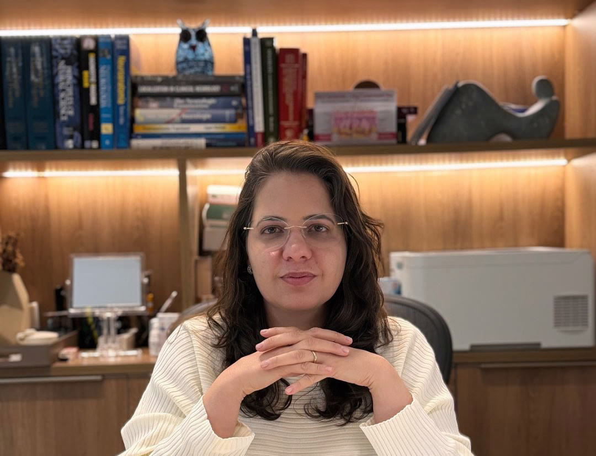

SBDPresidente da Sociedade Brasileira de Dermatologia · Bahia
Uma dermatologista que cuida das doenças da sua pele.
Dermatologia clínica e cirúrgica para todas as idades, com mapeamento corporal digital para acompanhar pintas e encontrar o melanoma cedo.
Dra. Maria Clara Dultra Gordiano · CRM-BA 16201 · RQE 10889

Por onde começar
O que trouxe você até aqui?
Uma pinta apareceu ou mudou de cor, tamanho ou forma
Veja os sinais de alerta e como a consulta e o mapeamento ajudam a acompanhar.
Sinais de alerta Pele do rostoAcne, manchas, melasma ou sinais do sol
Tratamento individual e a escolha certa do protetor solar para o seu tipo de pele.
Acne e manchas Unhas, cabelos e suorUnha encravada que volta, queda de cabelo ou suor excessivo
Da cirurgia definitiva da unha encravada ao cuidado do couro cabeludo.
Unhas, cabelos e suorMapeamento corporal
Acompanhar as pintas ao longo do tempo, para encontrar o melanoma cedo.
É um exame que documenta quase toda a superfície da pele por fotografias. As pintas são numeradas e cada uma passa por dermatoscopia digital.
Por que ir todo ano
A pele é o maior órgão do corpo. E também adoece.
O que eu trato
Pele, cabelos e unhas, da consulta à cirurgia.
“A pele é o maior órgão do nosso corpo. Ela nos protege e também nos conecta com o mundo.”Dra. Maria Clara
Câncer de pele e pintas
Doenças da pele
Como é a consulta
Tempo para ouvir, clareza para explicar.
É o que os pacientes mais destacam nas avaliações: diagnóstico explicado sem pressa e pouco tempo de espera.
Conversa
Você conta o que está sentindo, seu histórico e sua rotina.
Exame da pele
Avaliação da pele, e das unhas e do couro cabeludo quando necessário.
Dermatoscopia
Quando indicado, as lesões são vistas com aumento, sem dor.
Diagnóstico e plano
O diagnóstico é explicado com clareza e o tratamento é definido com você.
Acompanhamento
Retornos e, se indicado, o mapeamento corporal anual.

Sobre a Dra. Maria Clara
Referência da dermatologia na Bahia.
Formada em Medicina pela Universidade Federal da Bahia em 2003, a Dra. Maria Clara Gordiano é dermatologista e preside a Sociedade Brasileira de Dermatologia, regional Bahia.
Atua na dermatologia clínica e cirúrgica, com atenção especial à dermatologia oncológica: do mapeamento das pintas ao cuidado da pele de pacientes em tratamento de câncer e de pacientes transplantados.
Na imprensa
Informação sobre pele, para quem está fora do consultório.
Avaliações
Quem é paciente, recomenda.
124 avaliações
públicas no Google
Ela é uma excelente dermatologista e o consultório é muito bem organizado. O tempo de espera também é muito curto, apesar de ela dedicar bastante tempo aos pacientes.
É médica do meu filho, um ser humano incrível, uma profissional excelente e muito competente, transmite segurança explicando sem pressa o diagnóstico com clareza.
Atendimento humanizado, escuta ativa e domínio técnico de alto nível. Fui atendido com empatia, clareza e uma abordagem 100% personalizada.
Super atenciosa, simpática e muito competente. Me senti muito bem acolhido(a) durante a consulta e saí com toda confiança no tratamento.
Queria te agradecer por todo o cuidado e atenção com a minha filha. […] Sua leveza, paciência e carinho nos deixaram super confiantes e tranquilos.
Me atendeu prontamente, fiz uma cirurgia na unha encravada. Foi muito delicada e atenciosa. Solucionou meu problema.
Chegamos até ela por indicação de dois outros médicos especialistas e desde então o acompanhamento com minha mãe vem sendo extremamente cuidadoso.
Uma médica maravilhosa. Desde a recepção até o atendimento com ela, recomendo 100%.
Muito atenciosa, competente, esclareceu todas as minhas dúvidas. […] A recepcionista é muito educada e atenciosa, a clínica tem um espaço acolhedor.
Conteúdos
Para entender melhor a sua pele.
Pinta nova ou que mudou: quando procurar o dermatologista?
A regra do ABCDE e outros sinais que merecem uma avaliação.
Ler FotoproteçãoProtetor solar: como escolher o ideal para o seu tipo de pele
Textura, fator de proteção, quantidade e reaplicação.
Ler UnhasUnha encravada que sempre volta tem tratamento definitivo?
Quando a cirurgia é indicada e como ela funciona.
LerOnde atendo
CITT Alphaville, na Paralela.
Edf. Alpha Medical Center · salas 306 e 307Av. Luís Viana Filho, 7416 · Alphaville I, Paralela
Salvador · BA · 41730-101
Dúvidas frequentes
Antes da consulta
Com que frequência devo ir ao dermatologista?
Pelo menos uma vez ao ano. A visita anual ajuda a manter a pele saudável e a prevenir doenças graves, como o melanoma.
O mapeamento corporal é para mim?
Ele é indicado principalmente para quem já teve melanoma ou tem familiar que teve, para quem tem muitas pintas ou pintas grandes e irregulares, e para quem tomou muito sol na infância. A indicação é confirmada na consulta.
Atende crianças?
Sim. A dermatologia cuida de todas as idades, de bebês a idosos.
A consulta aceita convênio?
O atendimento é particular. Para valores e horários, fale com a equipe pelo WhatsApp.
A Dra. Maria Clara faz cirurgias?
Sim. A dermatologista realiza cirurgias dermatológicas, como a retirada de sinais, de cistos e do câncer de pele, e a cirurgia definitiva da unha encravada. O preparo é orientado em consulta.
Do you speak English?
Yes. A Dra. Maria Clara também atende em inglês.
Consulta anual
Cuide da sua pele pelo menos uma vez por ano.
Atendimento particular, de segunda a sexta, das 7h30 às 19h, no CITT Alphaville.
Marcar consulta pelo WhatsApp